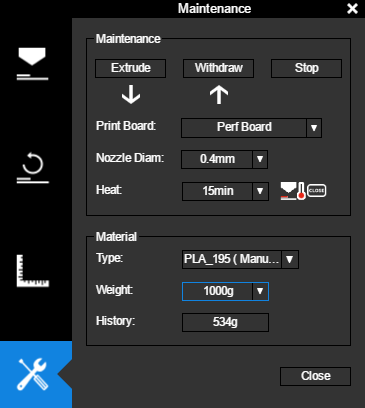

_____Imprimante 3D: 3D UP BOX+¶
TODO vérifier si 350 microns d’épaisseur des couches existes.
TODO dans éditer le filament vérifier comment créer un nouveau filament et s’il y a trois points pour ouvrir le menu de sauvegarde
Fonction¶
L’imprimante 3D vous permet de fabriquer des pièces en plastique automatiquement à partir d’un filament en plastique fondu. Un fichier informatique du modèle 3D contenant les trajectoires que l’imprimante doit réaliser est utilisé.
Matériel¶

Logiciel¶
Télécharger Up Studio (logiciel pour préparer le modèle à l’impression, aussi appelé « Slicer »)
Paramètres optimaux¶
Matériau: PLA
Température: 210°C
Layer Thickness (épaisseur des couches): 200 microns (avec une buse de 0.4mm)
Qualité: normal
Infill (remplissage): 15%
No Raft (pas de première couche d’aide à l’adhérence): décoché
No Support (pas de supports): décoché
Récupérer un modèle sur internet¶
Note
Les fichiers sont généralement compressés dans un fichier au format .zip. Pour utiliser son contenu, double-cliquez dessus pour l’ouvrir puis glissez les fichiers à l’intérieur dans un dossier préalablement créé.
Vous pouvez ne décompresser que les fichiers STL, ce sont les modèles 3D. S’il n’y a pas de STL utilisez les OBJ.
Utilisation¶
Préparation du matériel¶
Installez le plateau en le plaquant contre celui en aluminium. Alignez les vis, puis poussez-le vers le fond avec vos mains à plat.
Note
pour retirer le plateau vous devrez faire l’opération inverse.
il existe plusieurs types de plateaux, le flexible (Up Flex Board) vous permet de décoller votre création en retirant et pliant le plateau. Il n’y a pas besoin de spatule.

Pour mettre le filament, enlevez le tube de l’extrudeur en ouvrant l’imprimante 3D par le dessus et le couvercle magnétique sur le côté. Orientez la bobine dans le sens inverse des aiguilles d’une montre de sorte qu’à droite de la bobine le filament aille vers le haut. Coupez le bout en biseau et tordez-le dans le sens opposé de la courbure afin qu’il soit droit sur environ 5 cm. Faites passer le filament dans le tube, poussez-le jusqu’à ce qu’il ressorte de l’autre côté. Placez la bobine dans son emplacement. Vous pouvez voir sur l’image ci-dessous l’orientation de la bobine dans le sens inverse des aiguilles d’une montre, car le fil entre dans le tube par le dessus:

Note
Utilisez de préférence le filament de type PLA plutôt que l”ABS car il est moins polluant et plus simple à faire fondre (moins de risque que la buse ne se bouche).
Remettez le couvercle magnétique en place.
Reliez l’imprimante en USB à l’ordinateur, branchez l’alimentation. Appuyez sur le bouton pour le mettre sur On (symbole du trait).
Restez appuyé sur le bouton d’allumage sur le côté plusieurs secondes pour la démarrer.

Réglages logiciel¶
Lancez le logiciel Up Studio (lien plus haut dans la rubrique Logiciels), c’est un slicer, il va indiquer les couches et trajectoires que devra effectuer l’imprimante pour déposer le plastique. Dans ce logiciel vous importerez les modèles 3D téléchargés sur des sites comme Thingiverse ou modélisés vous-même dans par exemple Blender. Le format recommandé pour vos modèles 3D est le STL, le logiciel est compatible avec le format OBJ.
Note
Au premier lancement du logiciel, il vous sera demandé de vous connecter à votre compte. Cliquez à gauche sur
Account(compte), puis au centre surSign Up(s’inscrire).Avant de vous connecter, cochez
Auto Loginpour vous reconnecter automatiquement au lancement du logiciel.
Calibrez le plateau (recommandé après un transport de l’imprimante), pour cela cliquez sur l’icône Calibration représentée par deux règles perpendiculaires, dans la fenêtre qui s’ouvre cliquez sur Auto Level.
Attention
Pendant le calibrage l’imprimante va mesurer la taille de la buse, si l’imprimante fait un bruit de percussion vérifiez les branchements en appuyant sur tous les câbles.

Allez dans maintenance et vérifiez que dans Material type le matériau soit correct et que le Print Board soit celui que vous avez mis en place.

Pour mettre en place le filament dans la tête d’impression, dans le menu maintenance cliquez sur Extrude. L’imprimante va chauffer jusqu’à atteindre la température configurée. Vous pouvez suivre la température actuelle en haut de l’interface du logiciel. Une fois la température atteinte, la valeur sera écrite en rouge et l’imprimante émettra un son (bip sonore). Poussez le filament dans la tête d’impression. Pour retirer le filament et le changer cliquez sur Withdraw.

Préparer une impression sur UP Studio¶
Changer le modèle en cliquant sur le bouton + ou glissez le fichier contenant le modèle 3D dans l’interface. Pour rappel les formats supportés sont le STL (recommandé) et OBJ.
Les raccourcis pour vous déplacer dans la vue 3D:
le
clic gauchepermet de tourner dans la vue 3Dla
molettesert à avancer ou reculerle
clic droitdéplace la vue sur les côtés
Pour manipuler le modèle 3D, la roue en haut à droite sert à orienter, déplacer (le moins utilisé) et mettre à l’échelle (le plus utilisé).

Le bouton Auto Place représenté par l’icône d’une croix place le modèle à la hauteur du plateau.
Note
Le modèle touche le plateau par défaut à son importation, mais il peut arriver qu’il ne soit plus en contact avec une rotation.

Pour doubler l’échelle, cliquez sur l’icône Scale (échelle) puis sur le numéro 2, pour diviser par 2 cliquez sur 0.5.

Attention
Lorsque vous faites une mise à l’échelle les dimensions sont changées sur 3 axes, en doublant l’échelle vous multipliez le temps d’impression par 2 sur l’axe X, par 2 sur l’axe Y et par 2 sur l’axe Z, vous augmenterez le temps de 2x2x2 donc l’impression prendra 8 fois plus de temps. Une impression qui prenait 1 heure en prendra 8. Et inversement, en cliquant sur 0.5 vous divisez par 8 le temps d’impression. L’échelle est donc le paramètre qui aura le plus d’incidence sur la durée de l’impression.
Lancer une impression¶
Cliquez sur l’icône Print, des options s’afficheront avant de lancer l’impression.

Layer Thickness: c’est l’épaisseur des couches d’impression. 100-200 microns servent aux impressions détaillées comme les figurines et 200 à 350 microns pour les pièces mécaniques. Plus l’impression est épaisse moins elle prendra de temps à s’imprimer.
Infil: c’est le remplissage de la pièce, la valeur de 15% est la plus souvent utilisée, elle offre une bonne solidité tout en économisant du filament et temps d’impression. Les pièces soumises à des forces comme les engrenages ont besoin d’une valeur de remplissage plus élevée.
Quality: c’est la vitesse de déplacement de la buse, elle affecte la précision des trajectoires de l’imprimante.
Nozzle Offset: ce paramètre ajuste la hauteur de la buse, si cette dernière se bouche malgré la calibration, vous pouvez rapprocher la buse du plateau avec ce paramètre.
Unsolid Model: le logiciel ferme un modèle s’il comporte des trous. Il est recommandé de toujours l’activer.
No Raft: si l’option est cochée cela désactive le support sous l’impression 3D pour renforcer l’adhérence. Une pièce fine et cylindrique par exemple aura besoin d’un raft. Raft se traduit par radeau. Il est recommandé de décocher cette case pour avoir un raft.
No Support: désactive les supports. Il est recommandé de décocher cette case pour toujours avoir des supports surtout sur une impression qui prend du temps. La forme du modèle est son orientation vous permettent d’avoir besoin de moins de supports ou même de ne pas en avoir besoin (voir plus bas les conseils). Les supports peuvent prendre du temps à retirer et nécessiter du ponçage ensuite.
Cliquez sur Preview (prévisualiser) pour voir le temps d’impression et les supports. Si l’impression est trop longue, réduisez l’échelle.
Cliquez sur Print (imprimer) pour démarrer l’impression.
Fonctions avancées¶
Paramétrer son propre filament
Allez dans le menu Maintenance, à Material > Types:, sélectionnez Customized.
Dans la fenêtre qui s’ouvre, cliquez sur Edit (vous pouvez utiliser cette fenêtre pour vérifier les différentes températures de filament et de plateau).
Cliquez en haut à gauche pour ajouter un nouveau filament, éditez ses paramètres en cliquant sur le l’icône de crayon. N’oubliez pas de sauvegarder avant de fermer la fenêtre en cliquant sur les trois petits points en haut à droite puis Save.

Conseils¶
L’orientation va permettre d’éviter l’utilisation de supports, donc d’imprimer plus rapidement et de passer moins de temps à poncer le modèle pour lisser les surfaces.
Sur le modèle de gauche l’orientation nécessite beaucoup de supports, la tête est placée à la verticale et l’arrière du crâne et les deux oreilles ont besoin de maintien. Celui de droite est orienté pour que l’arrière du crâne touche le plateau ainsi qu’une des deux oreilles.

Un autre exemple, sur l’image de gauche le modèle n’a besoin d’aucun support et les surfaces seront plus lisses. Sur l’image de droite, beaucoup de supports seront nécessaires et la surface sera en « escaliers ».

Maintenance et messages d’erreur¶
Error: Insufficient Material
Si l’imprimante indique qu’il n’y a pas assez de filaments lorsque vous cliquez sur Print, modifiez manuellement la quantité de filament. L’imprimante calcule le filament consommé, mais ne prend pas en compte le changement de bobine.
